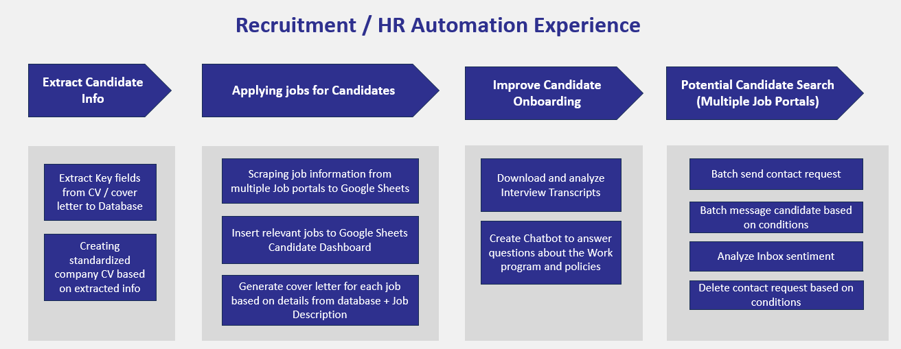
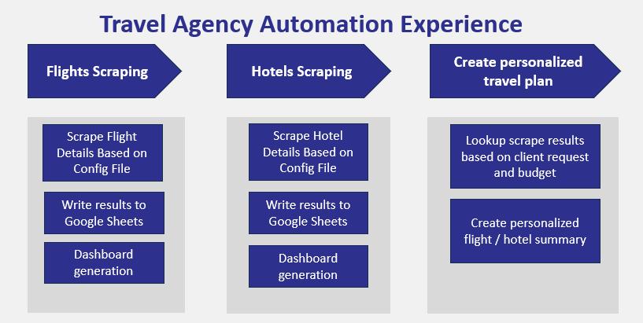
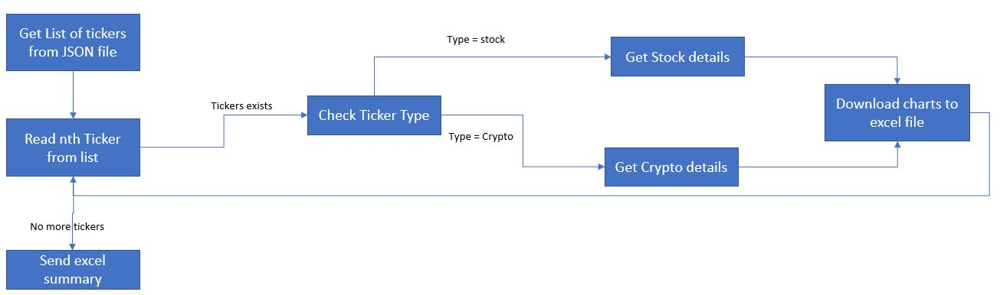
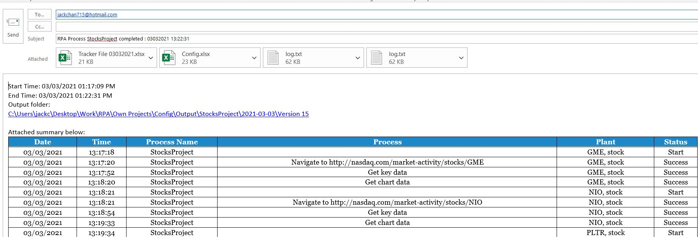

UiPath RPA Portfolio
| UiPath Forum Profile | Among most active users. Ranked top 10-15 in terms of solutions provided | Profile Link |
|---|---|---|
| UiPath Marketplace Profile | Created and uploaded multiple templates/frameworks/snippets/reusable components. 10k+ total downloads | Profile Link |
| jackchan715@hotmail.com | ||
| Resume + Job references | Download | |
| Upwork | Top Rated Freelancer | Profile Link |
Skills and Hyperautomation Stack
UiPath Automation Projects List
Some of my personal / freelance RPA projects and experience
OpenAI and Langchain
- OpenAI integration with RPA processes
- Integrated OpenAI with D-ID to turn user-uploaded images into talking avatar capable of answering user questions
- Integrated OpenAI with Langchain to create Chatbot capable of answer questions about uploaded PDFs
| Project | Description | Technologies | Video |
|---|---|---|---|
| Chatbot that combine OpenAI and text-to-video tech | By combining OpenAI's language processing capabilities with D-ID's text-to-video technology, this tool lets you upload a photo and turn it into a "Speaking portrait", allowing you to interact with it! | NodeJS, OpenAI, D-ID | Watch Video Here
|
| Upload documents and ask questions about these documents | Web application where you can upload any document (of ANY size/page count), and ask questions about these documents. The questions and answers will be stored on the web app | NodeJS, OpenAI, Langchain, SQL | Watch Video Here
|
SAP Automation
- Finance pipeline - fee settlement / cost center allocation / purchase order / accounts payable etc.
- Supply Chain pipeline - Shipment creation , combine shipments
- Customer Service pipeline - create dashboard to track product performance
| Project | Description | Technologies | Video |
|---|---|---|---|
| Cost Center Allocation | (SAP Process) Allocation of costs from one cost center to another and verify result | UiPath, VBA, VbScript, SAP | Watch Video Here
|
| Processing Fee settlement | (SAP Process) Download data from sap, consolidate excel and generate voucher, upload voucher and perform batch approval in SAP | UiPath, VBA, VbScript, SAP | Watch Video Here
|
Recruitment / HR Automation
| Project | Description | Technologies | Video |
|---|---|---|---|
| Extract fields from candidate CV and generate fixed-format company CV | For each CV in input folder, extract key fields into Google Sheets, after the sheet is verified and marked "Confirmed", the robot will generated a fixed-format word CV based on the details in the Google Sheet | UiPath, OpenAI, VBA, Google Sheets | Watch Video Here
|
| Job Candidate scraping and messaging | Scrape job candidate details from Xing.com based on input file, and based on certain conditions, send message to these candidates | UiPath, Python, JavaScript | Watch Video Here
|
| Job listing scraping | Scrape job listings details from Xing.com based on input file, and the scrape company email/phone number from Google search results | UiPath, Python, JavaScript | Watch Video Here
|
Travel Agency Automation
| Project | Description | Technologies | Video |
|---|---|---|---|
| Flights dashboard generation | Scrape all flights based on criteria and number of days and write to excel dashboard powered by VBA | UiPath, Python, JavaScript | Watch Video Here
|
| Flight and hotel scraping for Customer | Scrape flights/hotels data for customer based on input file, write results to Google Sheets | UiPath, Python, JavaScript | Watch Video Here
|
| Flight ticket listing scraping | Scrape flight listing details based on input file from MakeMyTrip.com | UiPath, Python, JavaScript | Watch Video Here
|
Digital Marketing Automation
- Facebook marketplace automation, Facebook account creation, Chrome profile batch creation etc...
- Batch Google ad image and content scraping to Google Bigquery
- Bulk ad and ad campaign creation
| Project | Description | Technologies | Video |
|---|---|---|---|
| Facebook marketplace automation | Fully automate Facebook marketplace listing creation, auto reply, chrome profile creation, login, language/location change and more... | UiPath, JavaScript | Watch Video Here
|
Consolidate Stocks And Crypto Summary In Excel
This is another one of my personal projects, but I have included a detailed walkthrough of the process here!
Generate an excel summary for a list of crpytocurrency and stock tickers. The tickers are specified by the user.
Subprocesses
| # | Name | Type |
|---|---|---|
| Subprocess 1 | Add Tickers To List | Attended robot |
| Subprocess 2 | Generate summary of tickers | Unattended robot |
Details
| Main tool | UiPath |
|---|---|
| Other technologies used | JavaScript, VBA |
| Systems involved | Web browser (Chrome) |
| Type of RPA | Data scraping from multiple websites, Data consolidation |
Subprocess 1 - Add Tickers to List
This process lets the user specify a list of Tickers (Stock/Crypto) for the robot. When the user runs this process, an excel table will popup, the user can fill in this table and click "OK".
The robot will then store this table in a JSON file. (If the JSON file already contains tickers, it will append to it)
When subprocess 2 runs, the robot will look at this list to know which stocks / cryptocurrency tickers to look at.
Subprocess 2 - Generate summary of tickers
The robot will go through the list of tickers in the JSON file. For each ticker - if the type = Stock, the robot will extract details from Nasdaq website, if type = Crypto, the robot will extract details from CoinMarketCap website. All the details and charts will be consolidated in an excel file.
Then it will generate an email (on the right) containing a summary of the details; the excel file that the robot also generated is attached in the email. The below video shows the details of the excel file
Generic UiPath Framework
This is the framework (built on top of UiPath's own REFramework) I use throughout almost all my projects. The one shown here is the base framework but for each project I will extend it to fit the client requirements
Generic framework applicable to any process, and can be built on top of your own processes. Easy to configure.
Details
| Main tool | UiPath |
|---|---|
| Type of RPA | Generic framework |
- Adding a generic framework allows you to separate generic steps and process-specific steps
- Applicable to all processes, only requires changing config file between different processes
- Make your process more modular by adding an additional layer (to separate process-specific and non process-specific logic)
- Reading config file
- System Health checks
- Archiving files Process specific steps include
- Reading input file / queue data
- Reading DB
- Running main process flow
- Can be built on top of your own main frameworks / sequences
-
Generic steps include
Features
Before the main process starts, the robot will run a "healthcheck" in the "Initialization" stage to ensure that all the required files, folders and credentials exist. The list of files/folders/credentials can be configured inside the program
After the healthcheck is completed, the robot will send a summary email stating whether the healthcheck is successful or not. If its successful, it can continue to the main process, otherwise, it will end


(2) Summary Email
After the process is finished running, the robot will send a summary email. This email contains a table summary of all the main steps that has been executed by the robot
